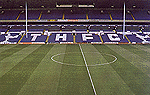

Our Home Ground
In 1885 Tottenham rented a new ground at Northumberland
Park. In The same year, Tottenham loaned money to a player called Ernie
Payne to replace boots he had lost, Because of this the London Football
Association banned spurs for two weeks for being a "professional" club.
Incensed, spurs quickly moved to abandon amateur status and become a limited
company in 1898---the same year we moved to our present, world-famous park
at White Hart Lane.

White Hart Lane.